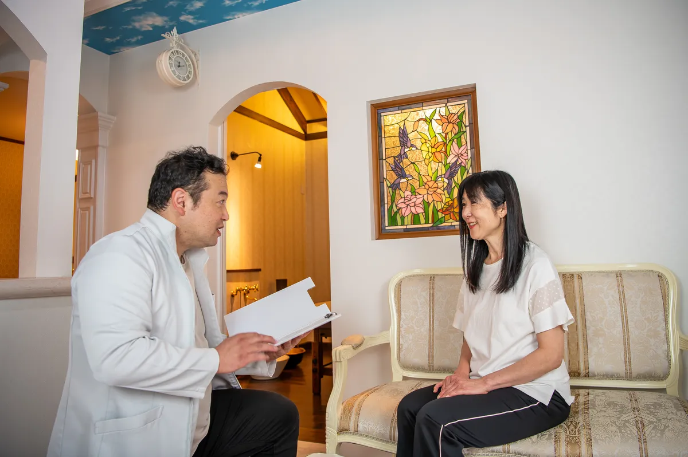
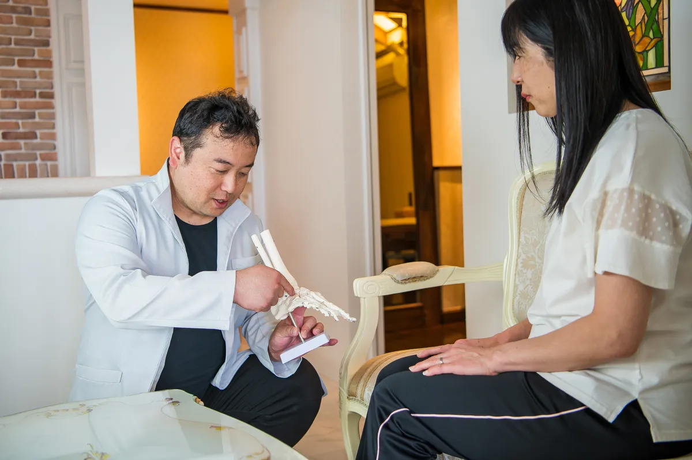
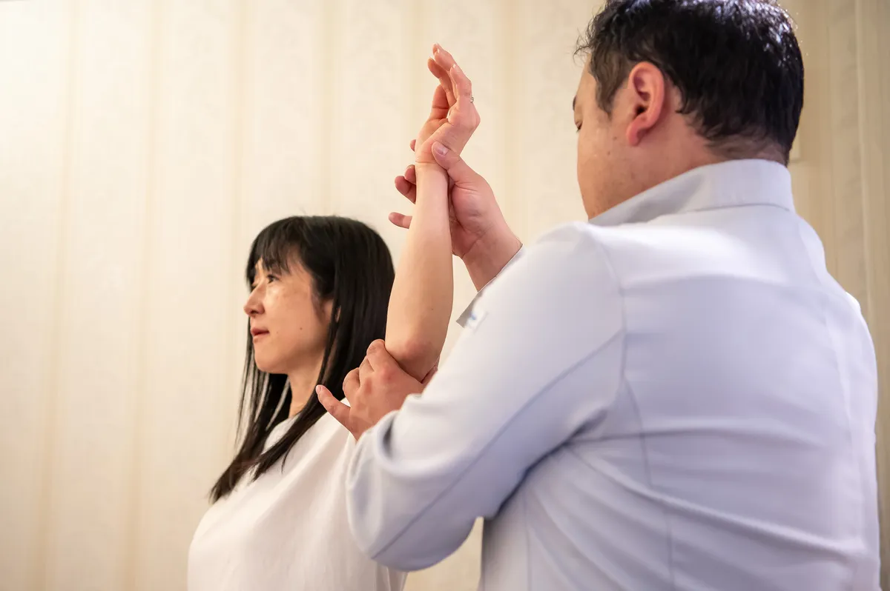
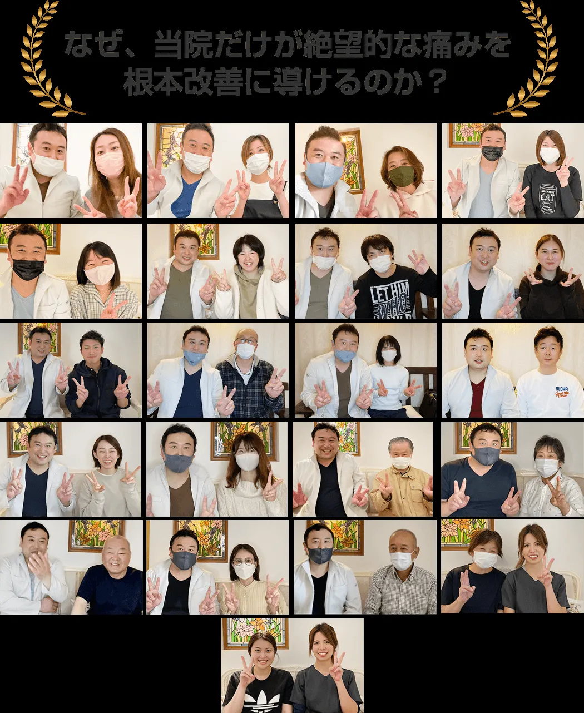
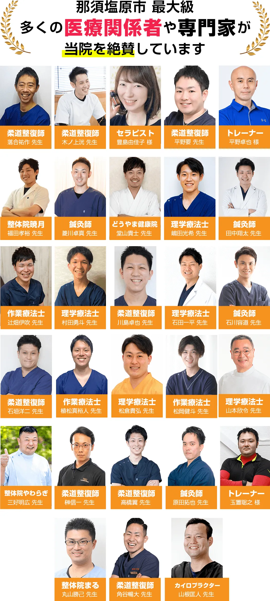
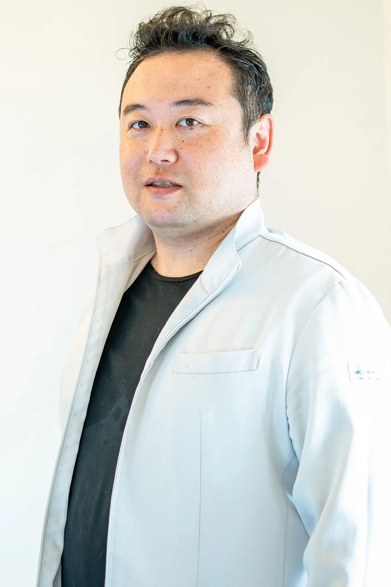
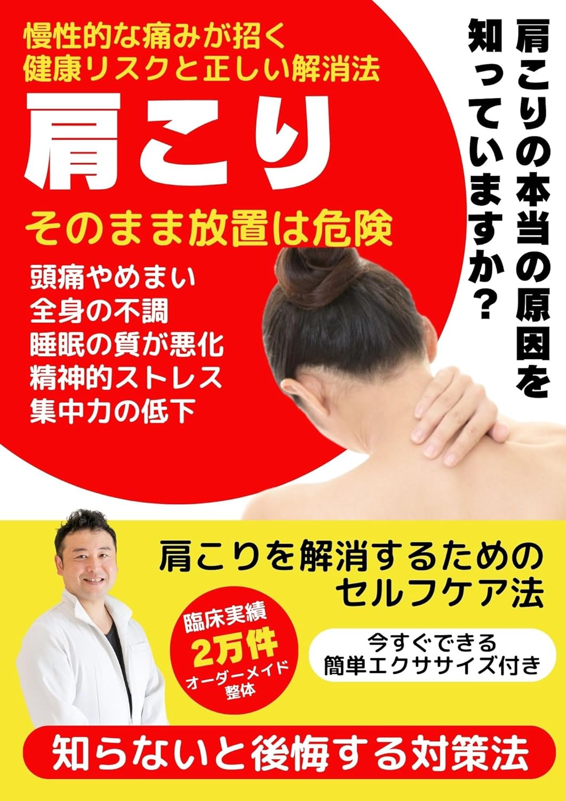
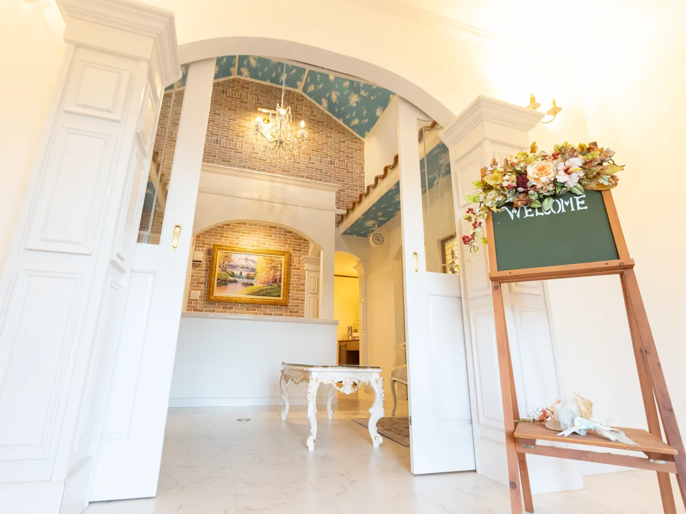
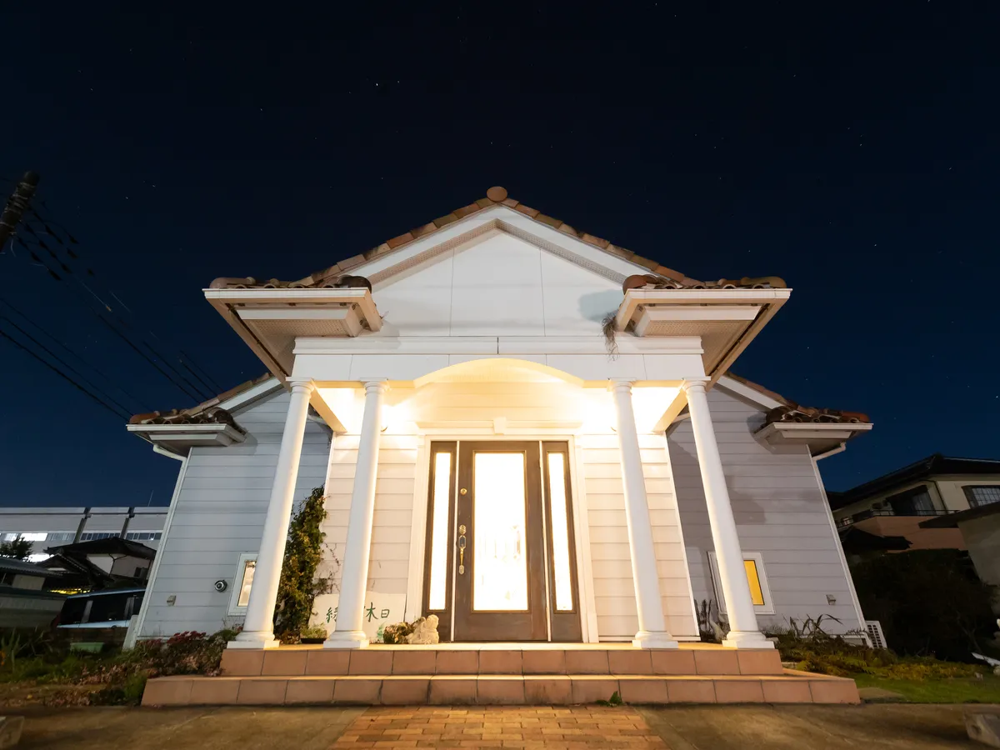

★★★★★
S.K（30代女性 / 那須塩原市）
「10年間の頭痛が嘘のように…」
学生の頃から偏頭痛持ちで、毎日ロキソニンが手放せませんでした。3回目くらいから雨の日でも頭痛が起きなくなり、今では薬を持ち歩くのを忘れるほどに。本当に感謝しています。
病院や整骨院で改善しなかった痛みを根本改善
NHK・TBSでも紹介されたMS式筋膜整体法
整体院Hikarino休日は、栃木県那須塩原市四区町1527-17にある整体院です。院長・佐藤光彦（整体歴16年・累計施術20,000件以上）が、MS式筋膜整体法で頭痛・肩こり・腰痛・骨盤矯正・冷え・不眠を根本改善します。初回1,980円（通常12,000円）。那須塩原市・大田原市・那須町・矢板市から多くの方にご来院いただいています。
通常初回施術費 12,000円 のところ
1日1名様限定 残り3名様
↓
そのお悩み、当院が根本改善いたします！
多くの場合、頭痛・肩こり・腰痛などの痛みだけでなく、慢性的な「冷え」や「不眠」も「筋膜の癒着」が根本原因です。筋肉を包む薄い膜「筋膜」が硬直・癒着すると、血行不良・自律神経の乱れ・姿勢の歪みが連鎖的に発生します。病院の薬や電気治療・一般的なマッサージは「痛みを一時的に和らげる」アプローチのため、筋膜にアプローチできず自律神経も整わず、根本改善に至らないことがあります。
当院のMS式筋膜整体法は、痛みの根本原因である筋膜の癒着・硬直を直接解放いたします。那須塩原市にお住まいの方はもちろん、大田原市や那須町からも「どこに行っても良くならない」とお悩みの方が多くご来院され、根本改善へと導いてきた実績がございます。
薬に頼らない生活へ
頭痛・肩こりの多くは、首まわりの筋膜の緊張が原因です。MS式筋膜整体法では首・肩甲骨まわりの筋膜を解放し、血流を改善することで、薬に頼らない根本改善を目指します。
痛みのない生活を取り戻す
腰痛の原因は腰だけでなく、骨盤・股関節・背中の筋膜バランスの乱れにあることがほとんどです。「手術しかない」と言われた方が施術後に痛みなく動けるようになった実績も多数あります。
美しいスタイルへ
産後の骨盤矯正は「いつから始めるか」が重要です。当院では産後の状態に合わせた骨盤矯正プログラムをご提案。施術12回で骨盤周り－7cm・体重－4kgの改善事例もあります。
ポカポカの体へ
冷え・むくみは「体質だから仕方ない」ではありません。筋膜の硬直が血行・リンパの流れを妨げているケースがほとんどです。筋膜を解放することで血行が改善し、施術後すぐに手足が温かくなる方も多数います。
-5歳若返る姿勢へ
猫背・姿勢の悪さは「意識が足りない」のではなく、筋膜の硬直によって正しい姿勢が取れない状態です。MS式筋膜整体法で筋膜バランスを整えることで、「勝手に姿勢が良くなる」状態を目指します。
深い眠りを取り戻す
不眠の原因の一つが「自律神経の乱れ」です。筋膜の緊張が自律神経を圧迫・乱すことで眠れない状態が続きます。MS式筋膜整体法で筋膜を解放し自律神経バランスを整えることで、薬に頼らない深い眠りを取り戻せた方が多数います。
NHK「ためしてガッテン」やTBS「金スマ」で取り上げられた筋膜リリースの概念を応用した独自技術。筋膜の癒着という痛みの本当の原因に直接アプローチします。
豆腐が崩れないほどの優しいタッチが特徴。痛みに敏感な女性や高齢の方、産後の方でも安心して受けていただける施術です。施術中に眠ってしまう方も多数います。
「なぜ痛みが出ているのか」「なぜ今まで改善しなかったのか」を徹底的に解明。原因を特定してから施術を行うので、根本改善が可能です。改善が難しい場合も正直にお伝えします。
他の患者様と顔を合わせることなく、リラックスして施術を受けていただける完全個室です。女性専用の落ち着いた空間で、プライバシーを守りながら施術を受けられます。
整体歴16年、累計施術20,000件以上の実績。満足度97%。那須塩原市・大田原市・那須町・矢板市など栃木県北エリアから多くの方にご来院いただいています。
初回は約2時間かけて丁寧にカウンセリング・施術を行います

現在の体の状態を詳しくヒアリング。「なぜ痛みが出ているのか」「なぜ今まで改善しなかったのか」を徹底的に分析します。生活習慣・姿勢・仕事環境なども含めて丁寧にお話を伺います。

骨盤の歪み、筋膜の硬さ、姿勢のバランスを精密にチェック。痛みの原因を徹底的に特定します。「どこに問題があるのか」を可視化してご説明します。

検査結果を基に、改善までの期間・回数・費用を正直にお伝えします。改善が難しい場合もきちんとお伝えし、他の専門機関をご紹介する場合もあります。

MS式筋膜整体法による施術。バキバキしない優しいタッチで、特定した筋膜の癒着・硬直に直接アプローチします。痛みの原因を根本から解消することを目指します。

自宅でできるセルフケア、正しい姿勢のつくり方、生活習慣のアドバイスをお伝えします。施術後もLINEで無料相談いただけます。

S.K（30代女性 / 那須塩原市）
学生の頃から偏頭痛持ちで、毎日ロキソニンが手放せませんでした。3回目くらいから雨の日でも頭痛が起きなくなり、今では薬を持ち歩くのを忘れるほどに。本当に感謝しています。
M.Y（40代女性 / 大田原市）
20年以上肩こりに悩んでいて、マッサージに行ってもその日の夜には戻っていました。施術後は嘘のように肩が軽くなり、今は月1回のメンテナンスで快適に過ごせています。
K.T（50代女性 / 那須塩原市）
病院では「手術しないと治らない」と言われましたが、どうしても手術はしたくなくて。全く痛くない施術なのに、終わった後に上を向けて涙が出ました。
A.T（30代女性 / 那須塩原市）
産後、骨盤周り92cmでズボンが入らず、腰痛で歩行困難でした。施術12回後には骨盤周り85cm（-7cm）、体重も4kg減。腰痛もなくなり、育児が楽になりました。
R.S（40代女性 / 矢板市）
年中足先が冷たく、夜眠れませんでした。施術を受けてから足先がポカポカし、靴下なしで眠れるように。夕方のむくみも気にならなくなりました。
M.K（30代女性 / 大田原市）
デスクワークで猫背がひどく、写真を見るたびにショックでした。施術を受けてから姿勢が良くなり、「痩せた？」「若返った？」と言われるようになりました。
同業の整体師・治療家からも高く評価されています

「佐藤先生のMS式筋膜整体法は、従来の整体・マッサージとは一線を画す独自のアプローチです。筋膜の癒着に対する精度の高いアプローチにより、他の手技では改善困難だった症例にも結果を出されています。那須塩原市エリアで本当に体を変えたい方に自信を持っておすすめできます。」— 推薦者A（整体師・施術歴15年）
「累計施術20,000件以上という実績は、ただの数字ではありません。佐藤先生の施術は、1件1件に丁寧なカウンセリングと根拠ある施術計画が伴っています。特に産後の骨盤矯正や慢性的な頭痛・腰痛でお困りの女性には、まず相談してみてほしい整体院です。」— 推薦者B（健康・美容分野専門家）
「Amazon著書『肩こり そのまま放置は危険』を読みましたが、肩こりの原因と筋膜アプローチについて非常にわかりやすく解説されています。理論と実践の両方に精通した佐藤先生の施術への信頼感が高まりました。」— 推薦者C（著書読者・同業施術者）

院長 佐藤 光彦
整体歴16年 / 累計施術20,000件以上 / 満足度97%
私は栃木県那須塩原市で生まれ、4歳から父の仕事の関係で東京都狛江市、アメリカ・カリフォルニア州で小学6年生まで過ごしました。
地元でバスケットボールや趣味のゴルフで練習中に腰を痛めたことがきっかけで、23歳の時にこの業界に入りました。現場での5年間で店長を経験し、その後エリアマネージャーとして人材教育・店舗運営に長く携わりました。
「もっと多くのお客様を改善したい」「お客様を大切にする組織を作りたい」という想いから独立し、整体院Hikarino休日を開院。MS式筋膜整体法を中心とした根本改善施術を提供しています。
痛みや不調がなくなった後の「本当にやりたいこと」を実現できるようサポートすることが私の使命です。那須塩原市・大田原市・那須町・矢板市など栃木県北エリアの皆様に、1日でも早く痛みのない生活をお届けしたいと思っています。

「肩こり そのまま放置は危険」
Amazon Kindleにて好評発売中
整体歴16年・累計施術20,000件以上の院長 佐藤光彦が、肩こりの本当の原因と、病院・マッサージでは改善しない理由、そして筋膜整体法による根本改善の方法をわかりやすく解説した電子書籍です。「なぜ肩こりが繰り返されるのか」「どうすれば根本から改善できるのか」を知りたい方に最適な一冊です。
9:00〜21:00
（最終受付20:00）
不定休
（土日祝も営業）
専用駐車場3台完備
（無料）
JR西那須野駅より車で15分
東北自動車道西那須野ICより車で5分



Googleマップで確認（那須塩原市四区町1527-17）
整体院Hikarino休日は、那須塩原市を中心に栃木県北エリア全域からご来院いただいています。
本気で改善したい方は、今すぐご予約を
通常初回施術費 12,000円 のところ
1日1名様限定 残り3名様
初回の施術で改善結果を実感できなければ施術費を全額返金いたします。あなたにリスクはありません。